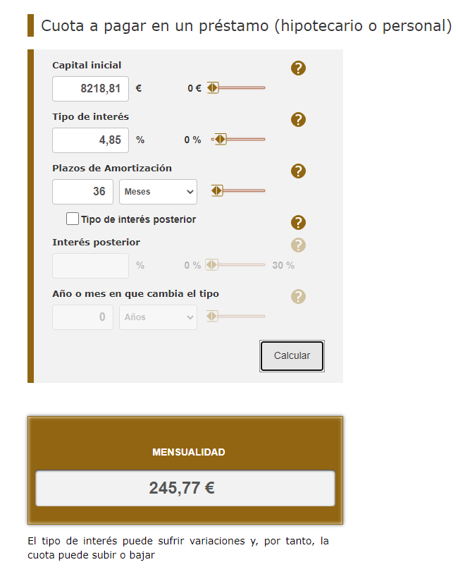
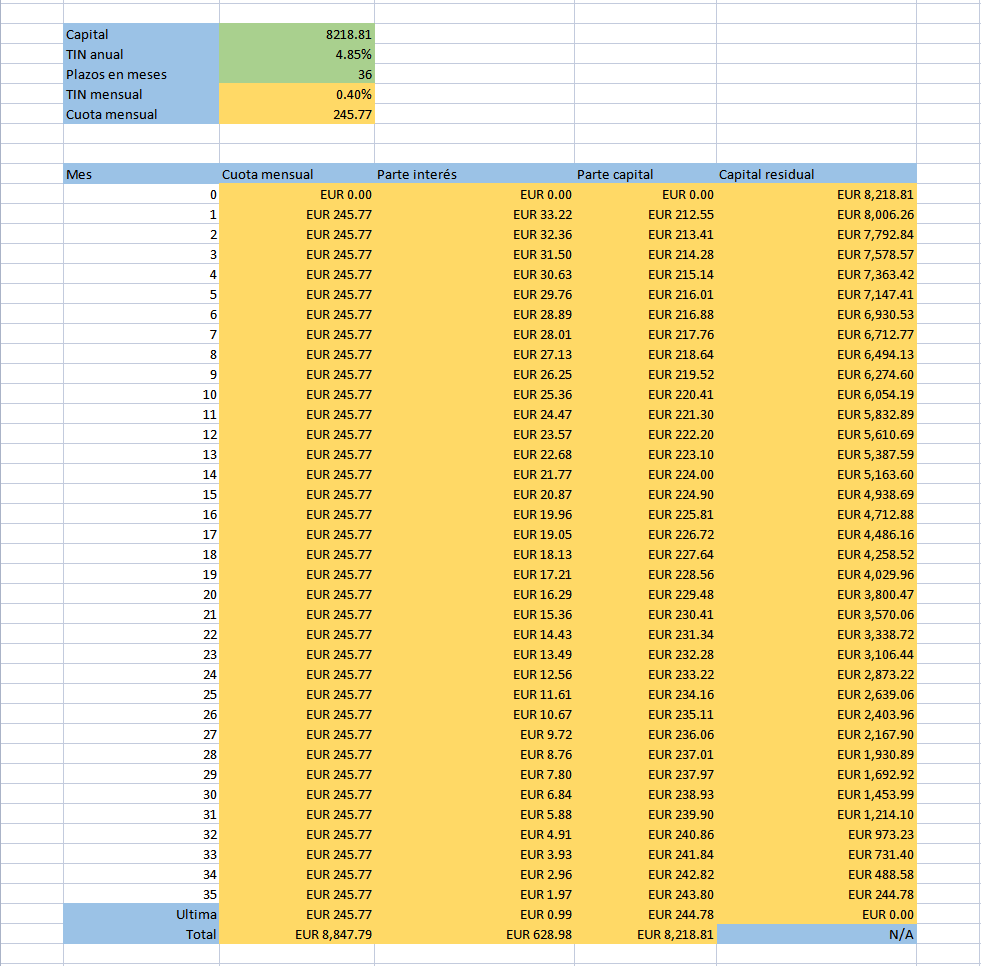
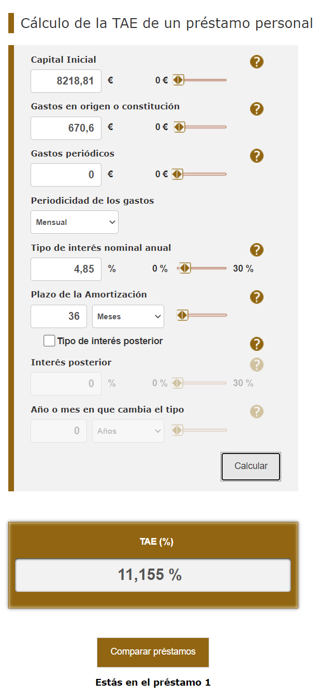

¿En qué consiste un préstamo?
Hay varios factores que influyen el rendimiento final de un préstamo
-
Capital o importe del préstamo: Es el dinero que
pides al banco.
- Comisiones: Son posibles gastos adicionales al préstamo. Hay varios tipos de comisiones, como la comisión de estudio y apertura, la comisión por amortización anticipada o la comisión por cambio de condiciones, comisión de registro. Todo ello se sumará a la hora de calcular el capital del préstamo. La parte de comisiones se refleja a la hora de calcular TAE.
- Servicios incluidos: Cuando pides un préstamo es posible que te incluyen otros servicios p.j. en caso de coche es posible que incluyen garantía extra, mantenimiento, etc. Tenemos que fijar bien en esos, que son coste que forma parte del capital y no es expresado a través de TIN ni TAE.
- Intereses del préstamo: Es la cantidad que te cobra la entidad por prestarte dinero.
- Cuota del préstamo: Es el dinero que vas a devolver en cada mes al banco hasta que termines de pagar el préstamo. Esta cuota se compone dos partes: una es el dinero que efectivamente vas devolviendo del préstamo, mientras que la otra son los intereses.
- Plazo de amortización: Es el tiempo durante el cual, en condiciones normales y sin amortizaciones anticipadas, estarás pagando las cuotas.
- Sistema de amortización: Marca la forma en la que devolverás el dinero. Hay más de una forma de calcular la amortización en un préstamo y más de un modelo de amortización. El más habitual en España es el sistema de amortización francés o de cuotas constantes, que hace que la cuota a pagar sea la misma a lo largo de toda la vida del préstamo.
¿Cómo calcular el capital de un préstamo personal?
La mayor parte del capital es el precio del producto que quieres comprar menos el pago inicial, por ejemplo en mi caso quiero comprar un coche de $12796.18$ euros, he pagado $6796$ como desembolso inicial, resulta a $6000.18$ como el dinero que necesito pedir al banco. Pero tambien hay que tener en cuenta los servicioes incluidos y comisiones. En mi caso
- la parte de base inicial que es: $6001.01$, creo que es por erro de calculo de la parte de banco, resulta un valor diferente.
- la parte de servicios incluidos que son: $37.7$ (Seguro Neumáticos) + $299.80$ (programa de mantenimiento) + $61.14$ (servicio de recogida de coche) + $152.82$ (seguro de llave) + $387.2$ (extension de garantia de coche) + $608.54$ (seguro de coche de primer año) = $1547.2$
-
la parte de comisiones son: $267.11$ (comisión de apertura) + $47$
(gastos de registro) + $356.49$ (seguros conditionantes) =
$670.6$ euros.
- donde seguros conditionantes son: $272.61$ (seguro de pagos) + $83.88$ (seguro familiar) = $356.49$ euros
$$
6001.01 + 1547.2 + 670.6 = 8218.81
$$
¿Cómo calcular los intereses de un préstamo personal?
Para poder calcular los intereses de un préstamo es esencial que te fijes en Tipo de Interés Nominal (TIN). TIN es concepto oficial establecido por el Banco de España. El TIN refleja el porcentaje fijo de pago por el dinero prestado, el TIN no tiene en cuenta ningún tipo de gasto asociado a la operación. Con ese dato en mente tenemos siguiente fórmula.
$$
\text{Cantidad a solicitar} \times \text{TIN} =
\text{intereses}
$$
Esta fórmula solo es válido para una operación a 12 meses. En otro caso tenemos que realizar (o pedírselo al banco) un cuadro de amortización del préstamo, donde tendrás detallados los intereses que pagas cada mes y los que abonarías en total. La razón es que los intereses que pagas por un préstamo personal se calculan sobre el capital restante.
¿Cómo calcular la cuota de un préstamo personal?
Al firmar un préstamo o una hipoteca, la mayoría de personas tiende a fijarse en la cuota, que es lo que pagarán cada mes. Banco de España ofrece un simulador online para facilitar el cálculo de cuota cuando se trata de amortización francés o cuota fija mensual.

Si queremos calcular nosotros manualmente el proceso es siguiente
Por ejemplo pedimos un préstamo 8218.81 euros con TIN 4.85% fijo anual a devolver en 3 años. Al ser un préstamo con cuota mensual, hay que normalizar tanto el TIN como el número de plazos a pagar, quedándonos los siguientes valores: TIN mensual $i = \frac{0.0485}{12} \approx 0.00404167$ y número de plazos $n = 12 \times 3 = 36$ meses. Usamos la fórmula de la renta calculamos cuota mensual.
$$
\begin{aligned}
\text{Capital} &= \text{cuota}
\times \frac{1 - (1 + i)^{-n}}{i}\\\\
8218.81 &=
\text{cuota} \times \frac{1 - (1 +
0.00404167)^{-36}}{0.00404167}\\\\
\text{cuota} &=
8218.81 \times \frac{0.00404167}{1 - (1 + 0.00404167)^{-36}}\\\\
\text{cuota}
&= 245.77
\end{aligned}
$$
Calcular la tabla de amortización
Una vez resuelto la cuota mensual del préstamo, podemos deducir la cuota de cada mes cuánto corresponde a la deuda original y cuánto al pago de intereses con la siguiente tabla

Puedes descargar aquí Excel para vuestro cálculo.
Derivación de la fórmula de la renta
Si no te interesa la parte de demostración matemática puedes saltar esta sección. Si tenemos $C$ la capital original, $c$ la cuota mensual, $i$ el porcentaje de interés mensual, $n$ número de meses, $r_{j}$ la capital residual en el mes $j$, $C_{j}$ capital pagado en el mes $j$, sabemos las siguientes relaciones
$$
C_{j} = c - r_{j-1} \cdot i
$$
y
$$
r_{j} = r_{j-1} - C_{j}
$$
Tal que podemos deducir que
$$
C_{j+1} = C_{j} \cdot (1 + i)
$$
porque
$$
\begin{aligned}
C_{j + 1} &= c - r_{j} \cdot
i\\\\
&= c - (r_{j-1} - C_{j}) \cdot i\\\\
&=
(c - r_{j-1} \cdot i) + C_{j} \cdot i\\\\
&= C_{j} +
C_{j} \cdot i\\\\
&= C_{j} \cdot (1 + i)\\\\
\end{aligned}
$$
Desde la observación de la tabla de amortización vemos que la última cuota siempre es $C_{n}$ más su propio interés generado $C_{n} \cdot i$. Con el resultado anterior tenemos
$$
\begin{aligned}
C_{n} &= \frac{c}{1 + i}\\\\
C_{n-1}
&= \frac{C_{n}}{1 + i} = \frac{c}{(1 + i)^2}\\\\
&
\vdots\\\\
C_{j} &= \frac{c}{(1+i)^{n-j+1}}
\end{aligned}
$$
Con todo esos llegaremos a siguiente conclusión
$$
\begin{aligned}
C &=
\sum_{j=1}^{n}{C_{j}}\\\\
&=
\sum_{j=1}^{n}{\frac{c}{(1+i)^{n-j+1}}}\\\\
&=
\sum_{j=1}^{n}{\frac{c}{(1+i)^{j}}}\\\\
&=
((\sum_{j=1}^{n}{\frac{c}{(1+i)^{j}}}) + c) - c\\\\
&=
c \cdot \frac{1 - (1+i)^{-(n+1)}}{1-\frac{1}{1+i}} - c\\\\
&=
c \cdot \frac{1 - (1+i)^{-(n+1)}}{\frac{i}{1+i}} - c\\\\
&=
c \cdot \frac{(1 + i) - (1+i)^{-n}}{i} - c\\\\
&= c
\cdot \frac{(1 + i) - (1+i)^{-n}}{i} - \frac{c \cdot i}{i}\\\\
&=
c \cdot \frac{1 - (1+i)^{-n}}{i}\\\\
\end{aligned}
$$
donde el paso $(\sum_{j=1}^{n}{\frac{c}{(1+i)^{j}}}) + c = c \cdot \frac{1 - (1+i)^{-(n+1)}}{1-\frac{1}{1+i}}$ es por la regla de suma de progresión geométrica.
TAE
A diferencia del TIN, la TAE (Tasa Anual Equivalente) toma en consideración las comisiones, el plazo de amortización, la capital. Podemos calcular TAE a partir de TIN con el simulador de Banco de España.

Donde capital inicial es importe total del crédito que incluye las comisiones y seguro, y gastos en origen o constitución es la suma de costes adicionales como comisiones y seguro. El cálculo de TAE es lo mismo resolver siguiente ecuación. Hay que tener en cuenta que TAE anual y TAE mensual no es relación linear, sino es $1 + TAE_{\text{anual}} = (1 + TAE_{\text{mensual}})^{12}$
$$
\text{Importe total del crédito} - \text{comisiones} -
\text{seguro} =
\sum_{j=1}^{n}{\frac{c}{(1+\text{TAE})^{\frac{j}{12}}}}
$$
Es difícil resolver la ecuación analíticamente, siguiente algoritmo nos ayuda a encontrar TAE.
Referencia
- Cómo calcular los intereses que pagarás por un préstamo personal
- Tabla Amortización - calcular mensualidad online
- Préstamo: cómo calcular los intereses
- Rentas
- LA TASA ANUAL EQUIVALENTE (T.A.E.): concepto y cálculo
- CÁLCULO DE LAS TASAS DE COSTE O RENTABILIDAD DE OPERACIONES
- Calculadora – Cálculo de intereses y simulador de préstamo
- Así se calcula un préstamo
- ¿Qué es el TIN y en qué se diferencia de la TAE?
- Plazo de amortización
- Ley 16/2011, de 24 de junio, de contratos de crédito al consumo
- 贷款/买房，利息怎么算？不要被忽悠了！李永乐老师讲等额本金和等额本息算法